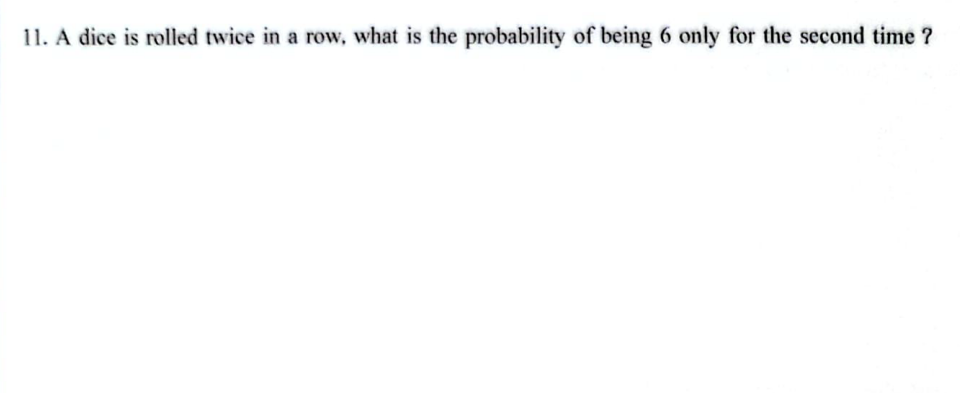

Problem 11: Two dice are rolled twice. What is the probability that only the second die shows a 6 in the second roll?
题目 11: 连续掷两次骰子，仅第二次掷出6点的概率是多少？

Answer: The probability is 5/36.
答案: 5/36
Each die has 6 faces. The probability of rolling a 6 on a single die is 1/6.
The probability of rolling a non-6 is 5/6. Since the two rolls are independent,
the probability that only the second die shows a 6 (and the first does not) is:
P(First ≠ 6 AND Second = 6) = P(First ≠ 6) × P(Second = 6) = (5/6) × (1/6) = 5/36.
解析： 每个骰子有6个面，掷出6点的概率是1/6，掷出非6点的概率是5/6。
由于两次掷骰是独立的，仅第二次掷出6点的概率是：
P(第一次≠6 且 第二次=6) = P(第一次≠6) × P(第二次=6) = (5/6) × (1/6) = 5/36。
使用说明：